Markkinavihreät toivottavat:
Mielestämme Vihreät on arvoliberaalin sivistysporvarin luontainen koti, ehkä perustelumme luettua olet samaa mieltä?
Tämä sivu on tehty sivistysporvarille: sosiaaliliberaalille, joka uskoo markkinoiden voimaan, arvostaa sivistystä ja koulutusta, kannattaa länsimaista yhteistyötä ja katsoo eteenpäin.
Käymme läpi millainen puolue Vihreät on: mitä se ajaa, missä se ottaa selkeitä kantoja ja kenelle se sopii.
Moni markkinavihreä on tullut Kokoomuksesta tai muiden porvarillisten puolueiden arvoliberaaleista siivistä. Jos veronalennukset ovat sinulle ykkösasia muista asioista riippumatta, Vihreät ei todennäköisesti ole sinun puolueesi. Jos verotuksen taso on sinulle vain yksi politiikkakysymys muiden joukossa, lue eteenpäin.
Sivun on rakentanut joukko markkinavihreitä aktiiveita, eikä sivu ole virallinen Vihreiden sivu.
Tutustu VihreisiinVihreät on markkinoiden voimaan uskova arvoliberaali, sivistykseen ja tietopohjaiseen päätöksentekoon panostava urbaani puolue, jolle on tärkeää myös tulevien sukupolvien hyvinvointi.
Markkinatalouden ystävä puolustaa kilpailua, ei vakiintuneiden yritysten asemia. Aito markkinaliberalismi ei tue yrityksiä poliittisin perustein eikä suojele vakiintuneiden toimijoiden asemia, vaan avaa markkinat aidolle kilpailulle. Yritystuet ja sääntely, joka pitää uudet tulokkaat ulkona, kuuluu pro-business-politiikkaan. Vihreät on pro-market.
Vihreille markkina tarkoittaa, että hinnat kertovat totuuden, kilpailu on aitoa ja tehoton väistyy tehokkaamman tieltä. Siksi haluamme karsia markkinoita vääristävät ja etenkin ympäristölle haitalliset yritystuet, hinnoitella ulkoisvaikutukset ja avata keinotekoisesti suojattuja markkinoita. Markkinaliberaali rakastaa kilpailua, ei voittajia.
Päästökauppa ja kulutushaitan hinnoittelu ovat Vihreille keskeisiä työkaluja ulkoisvaikutusten saamiseksi markkinoille. Markkinaehtoisuus on linjan ydin, jota täydennetään tarvittavalla sääntelyllä.
Emme halua olla toimettomina kriisin edessä, mutta emme myöskään halua ensisijaisesti ajaa muutosta keskussuunnittelulla. Markkinat löytävät hyvät ratkaisut, mutta ne markkinat täytyy ensin luoda.
Sivistysporvari näkee, että koulutus ei ole juokseva kulu vaan investointi: koulutettu väestö maksaa enemmän veroja, tarvitsee vähemmän tukia ja keksii ratkaisut kysymyksiin, joita kukaan ei vielä osaa kysyä.
Viimeisen 10v aikana on useaan otteeseen leikattu, ja Suomi on pudonnut OECD-vertailussa korkeakoulutettujen määrässä keskiarvon alapuolelle. Vihreät haluavat aidosti kääntää tämän kehityksen panostamalla koulutukseen varhaiskasvatuksesta tohtorikoulutukseen.
Vihreissä arvoliberaali linja on koko puolueen yhteinen suunta.
Myönteinen suhtautuminen maahanmuuttoon, vähemmistöjen oikeudet ja sitoutuminen kansainvälisiin sopimuksiin ovat Vihreiden sisällä yhtenäisesti jaettuja asioita, eikä Vihreiden jäsenenä tai äänestäjänä joudu pelkäämään että äänet valuvatkin arvokonservatiiveille.
Vihreät on Suomen selkein YIMBY-puolue (yes in my backyard): tiivistä mutta viihtyisää, toimivaa ja vehreää sekä ilmastonmuutokseen sopeutuvaa rakentamista, kaavoituksen nopeuttamista tiivistämisen osalta ja vanhojen asukkaiden valitusoikeuden rajaamista yleisen edun vastaisesta jarrutuksesta uudisrakentamisessa.
Tämä on markkinaratkaisu asuntopulaan ja asumisen hintaan kasvukeskuksissa. Täydennysrakentamisella on myös positiivinen nettovaikutus kuntatalouteen, kun taas hajarakentamisen nettovaikutus on negatiivinen.
Vihreät ei sovi kaikille. Jos jokin seuraavista on sinulle kaikkein tärkeintä politiikassa, Vihreät ei todennäköisesti ole sinun puolueesi.
Ilmasto ja ympäristö ovat Vihreille politiikan lähtökohta, eivät lisäys muun politiikan päälle. Jos ne ovat sinulle toissijaisia, Vihreät tuskin on sinun puolueesi.
Vihreät on avoimesti liberaali puolue: katsomme eteenpäin, suhtaudumme muutokseen myönteisesti emmekä pidä perinteitä itsessään syynä jatkaa entiseen malliin.
Jos perinteiden säilyttäminen, myös silloin kun joku kärsii siitä, on sinulle tärkeää, Vihreät ei ole sinulle.
Vihreille verot ovat työkalu hyvinvointiyhteiskunnan rahoittamiseen ja markkinoiden ohjaamiseen, ei itsetarkoitus.
Verotuksen painopistettä on siirrettävä työn ja yrittämisen verotuksesta haittoihin, kulutukseen ja kiinteistöihin. Jos sinulle oleellisinta on matala veroaste muista asioista riippumatta, Vihreät ei ole sinun puolueesi.
Vihreät tekisi kaupungeissa autoilusta markkinaehtoista: ruuhkamaksut, markkinahintainen pysäköinti ja autopaikkanormin purku.
Kun kaupunkitilasta maksetaan markkinahinta, niin vähenevät ruuhkat, sujuvoituu kaikki liikenne autoilua myöten ja saadaan kaupunkitila eniten hyvinvointia tuottavaan käyttöön. Jos muiden tukemana halpa kaupunkiautoilu on sinulle tärkeää, Vihreät ei ole sinun puolueesi.
Maailma on kriisissä. Hyvän elämän edellytyksiä tuhotaan monella rintamalla maailmanlaajuisesti, myös Suomessa. Ja me emme suostu hyväksymään toimettomuutta tilanteen edessä!
Suomen tulee toimia päättäväisemmin fossiiliriippuvuudesta irtautumiseksi sekä ympäristötuhon kääntämiseksi. Se on paitsi oikeudenmukaista tulevia sukupolvia kohtaan, niin järkevää myös tässä ajassamme. Käynnissä on valtaisa globaali yhteiskuntien murros kohti uusiutuvan energian hyödyntämistä, ja on Suomen etu olla muutoksen eturintamassa. Itsenäisen Suomen etu on irtautua riippuvuudesta autoritaarisiin öljyvaltioihin.
Me rakastamme sivistystä ja tietoa. Meille totuudella on itseisarvo, ei vain välinearvo. Ihmiskunnan tulevaisuuden määrittää sivistys - joko sen kukoistus tuottaa meille valoisan tulevaisuuden, tai sen rappio tuottaa ihmiskunnan tuhon. Ja me haluamme rakentaa sen valoisan tulevaisuuden, uuden sivistyksen tuoman kultakauden. Olemme vastavoima halvalle populismille ja lyhytnäköiselle politiikalle, joka murentaa liberaalin demokratian perustaa. Kun monet muut vajoavat kohti pimeyttä, me sanomme että se ei meille käy, ja toteamme: Me sosiaaliliberaalit kannamme valistuksen soihtua, jatkaen sen perintöä kohti uutta kukoistusta!
Jokainen ihminen on samanarvoinen, se on arvojemme ja hyvän yhteiskunnan perusta. Tämän hyväksyminen on myös parhaan yhteiskuntamuodon, eli liberaalin demokratian, ehdoton edellytys. Liberaali demokratia ei kuitenkaan selviä ilman puolustajia. Ja me emme peräänny kutsusta, vaan puolustamme liberaaleja arvoja niitä vastustavilta voimilta! Me puolustamme itsenäistä ja vapaata mediaa kaikenlaista poliittista painostusta vastaan. Me kunnioitamme yksilönvapauksia, puolustamme sananvapautta, oikeusvaltiota ja perustuslakia. Nämä instituutiot ovat itseisarvoisen tärkeitä, sillä liberaalia demokratiaa ei voi olla olemassa ilman niiden riippumatonta olemassaoloa. Meille liberaali demokratia ei ole kaupan!
Tasa-arvoiset ja sivistyneet ihmiset joille valta on jaettu tasaisesti on paras tapa järjestää yhteiskunta. Tästä syystä me uskomme paitsi demokratian, niin myös markkinoiden voimaan, markkinoiden hajauttaessa päätöksenteon siihen osallistuvien kesken. Mutta, toisinkuin jotkut kauniista haavekuvista sokaistuneet, emme usko säätelemättömiin markkinoihin. Markkinat ovat tehokkaita, mutta tehokkuus ilman suuntaa on tie tuhoon. Me vaadimme ja rakennamme markkinataloutta, jossa ekologiset ja sosiaaliset ulkoisvaikutukset hinnoitellaan oikein, ja markkinahäiriöt tunnistetaan. Vasta silloin markkinat palvelevat ihmistä, eikä päinvastoin. On julkisen vallan tehtävä suunnata markkinoiden voima hyvän luomiseen, maailman tuhoamisen sijaan.
Maailma on kriisissä, mutta sen ei tarvitse olla. Kaikki me voimme vielä valita toisin, ja johtaa muutosta koko ihmiskunnalle. Ihmiskunta voi valita sivistyksen valaiseman polun loistokkaaseen tulevaisuuteen, ja se on meidän valintamme pimeyden sijaan. Meillä on kaikki tieto ja kaikki työkalut hyvän tulevaisuuden tekemiseksi, meidän tarvitsee vain järjestäytyä ja ryhtyä toimeen. Me kutsummekin ihan kaikki mukaan tekemään sellaista muutosta, jonka voimme ylpeänä jättää tuleville sukupolville!
Vihreiden sisällä toimii useita sivistysporvarille sopivia järjestöjä.
Liberaali maailmankuva. Markkinatalous. Katse uudistuvan talouden puolella luutuneen edunvalvonnan sijaan. Olisiko uusi kotisi Vihreissä?
Liity Vihreisiin →Ville Aarnio on filosofi, sijoittaja ja metsänomistaja, joka toimii Talousvihreiden puheenjohtajana ja lisäksi Maaseutu- ja erävihreissä sekä vihreänä puoluevaltuutettuna. Akateemisesti hän on erikoistunut talous- ja yhteiskuntateorioiden perusteisiin kuten peli- ja päätösteoriaan. Politiikassa Aarnio pyrkii erilaisten intressien kuten taloudellisen lisäarvon ja luonnonsuojelun yhteensovittamiseen. Erityisenä osaamisalueena ovat pääomaverotus sekä metsätalous.
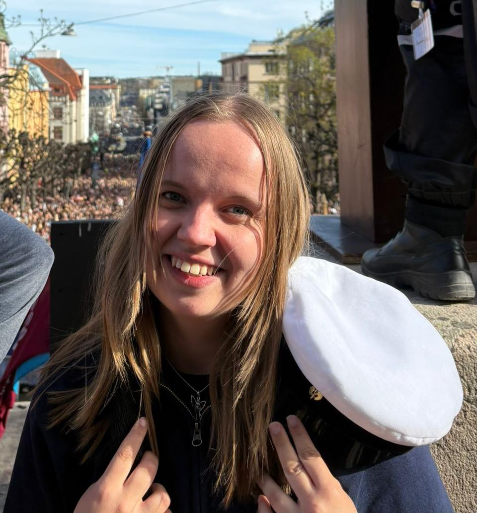
Sofia Alainen on tietotekniikan diplomi-insinööriopiskelija, Turun yliopiston ylioppilaskunnan hallituksen varapuheenjohtaja ja Vihreiden nuorten ja opiskelijoiden liittohallituksen jäsen. Hän on kotoisin ylisukupolviselta maatilalta Etelä-Pohjanmaalta ja maanviljelijäperheensä ensimmäisen sukupolven korkeakouluopiskelija.
Hänen politiikkansa ytimessä on ajatus Suomesta, jossa lähtökohdat eivät määritä tulevaisuutta. Vain ihmisen oma kyvykkyys, kunnianhimo ja unelmat.
Ester Dufva on helsinkiläinen yrittäjä, kääntäjä ja vihreä puolueaktiivi. Hänelle politiikan peruskiviä ovat luonnonsuojelu ja sosiaalinen oikeudenmukaisuus. Niiden varaan voidaan rakentaa reilu, sivistynyt ja vauras yhteiskunta, joka kannustaa ihmisiä yritteliäisyyteen ja aktiiviseen toimintaan niin pienissä kuin isoissa asioissa. FM, LuK.
Kalle Euro on arkkitehtuurin, kestävän kaupunkikehityksen ja markkinatalouden puolustaja, joka liittyi Vihreisiin, koska koki puolueen yhdistävän tulevaisuususkon, sivistyksen, kansainvälisyyden ja ihmisoikeuksien puolustamisen. Pitkän Kokoomus -taustan jälkeen ratkaisevaa oli tunne siitä, että Vihreissä markkinalähtöinen talousajattelu, moderni kaupunkipolitiikka ja avoin yhteiskunta voivat kulkea yhdessä.
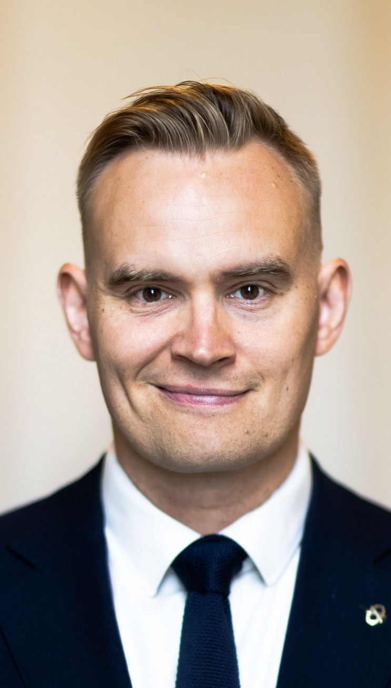
Atte Harjanne on kansanedustaja, kaupunginvaltuutettu, diplomi-insinööri, ilmastonmuutostutkija ja reservin kapteeni Helsingistä. Harjanne on keskittynyt politiikassa energiaan, turvallisuuteen, teknologiaan ja talouteen sekä reilun kilpailun ja terveiden markkinoiden edistämiseen.
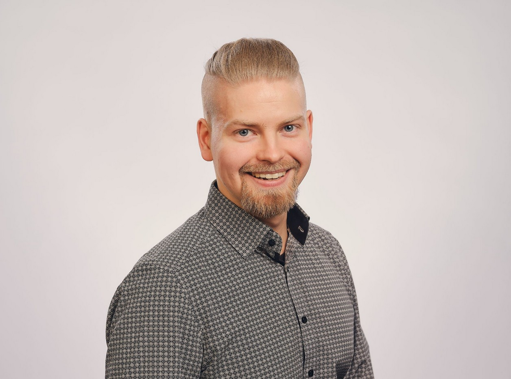
Joel Himanen on datatieteilijä ja ohjelmistokehittäjä (DI, Aalto), jota ajaa tahto ratkaista yhteiskuntamme viheliäisimpiä ongelmia yritystoiminnan kautta. Himanen uskoo hyvinvointivaltion, terveiden markkinoiden sekä markkina- ja yritysmyönteisen sääntelyn yhdistelmän olevan avain talousjärjestelmämme sovittamiseen planeettamme kantokykyyn. Hänen ideaaliyhteiskunnassa markkinavoimat on valjastettu kytkemään voitollinen yritystoiminta ja ihmiskunnan vakavimpien haasteiden ratkominen toisiinsa — maailman parantamisesta palkitaan!
Taavi Horila on integraatioarkkitehti, YTM, Seinäjoen Vihreät ry. puheenjohtaja ja Vihreiden puoluevaltuuston jäsen. Hänelle politiikan tärkeimpänä tavoitteena on planeetan säilyminen elinkelpoisena ja tämän eteen Horila haluaa oman osansa tehdä. Markkinatalous on paras mahdollinen tapa ratkoa resurssien jako oikeudenmukaisesti. Oikeilla reunaehdoilla ja ulkoisvaikutusten hinnoittelulla markkinatalous on myös kaikille reilu tapa ratkaista ilmasto- ja luontokriisi.
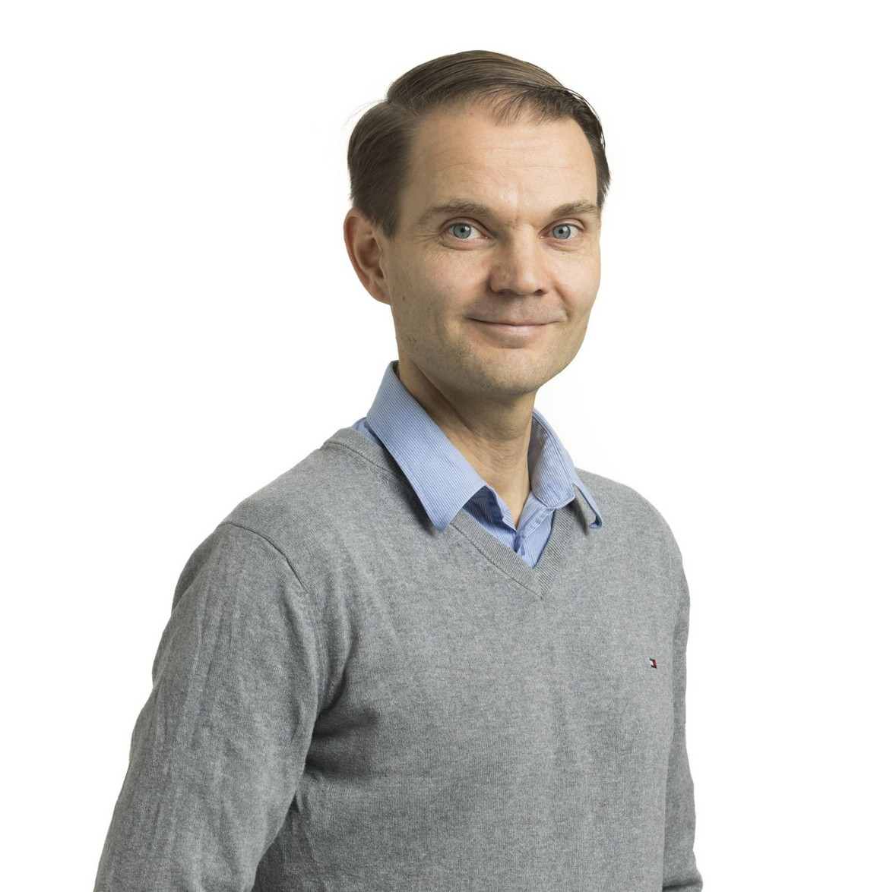
Timo Huhta on energiatekniikan diplomi-insinööri, rakennuttajakonsultti, väitöskirjatutkija ja vantaalainen varavaltuutettu. Huhdan tavoitteena on rakentaa taloudellisesti kestävää ja oikeudenmukaista hyvinvointivaltiota, mihin kuuluvat kestävä kasvu ja kaupunkikehitys, menestyvät yritykset, elinvoimaiset ja viihtyisät asuinalueet sekä panostukset lasten ja nuorten hyvinvointiin. Poliittisissa teemoissa näkyvät erityisesti maa- ja asuntopolitiikka, kaupunkikehitys sekä energia- ja ilmastopolitiikka.
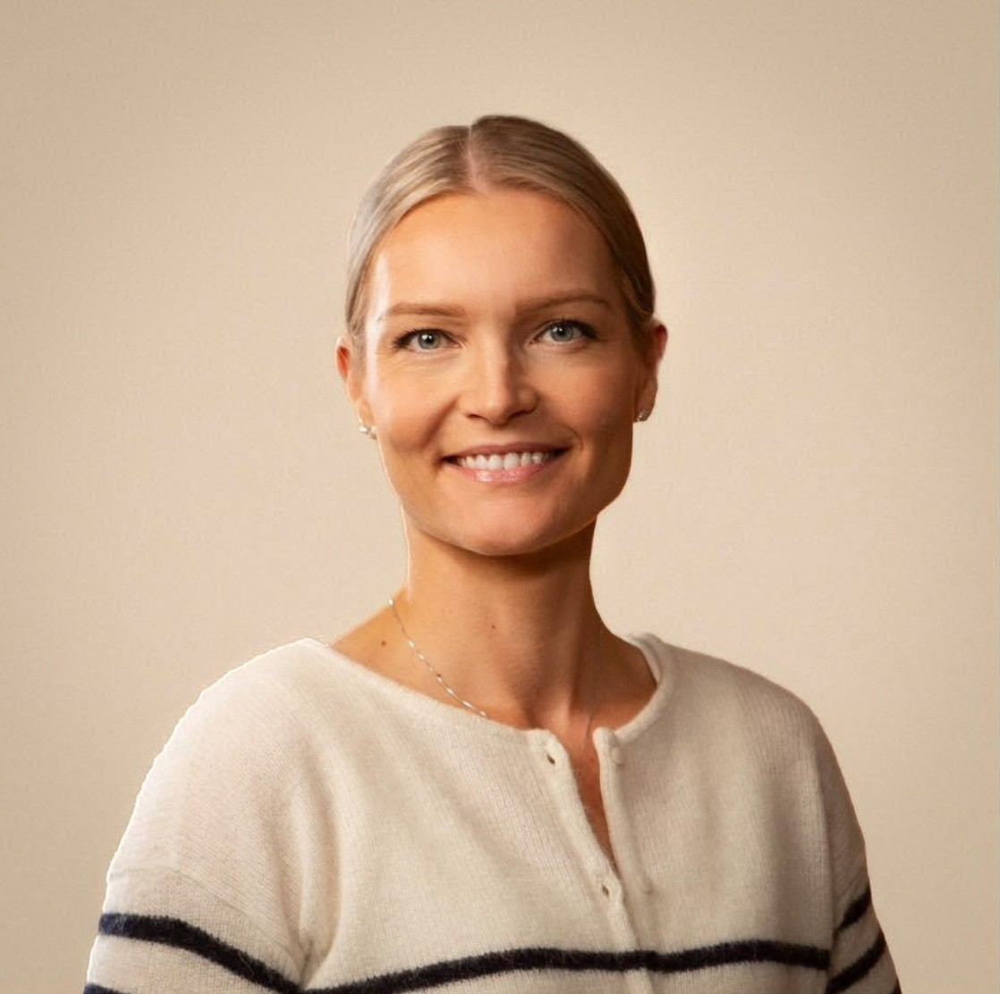
Anna Jaakola on pyhtääläinen naistentautien ja synnytysten erikoislääkäri, yrittäjä ja pienen pojan äiti. Hänelle tärkeää on politiikka, jossa tulevien sukupolvien hyvinvointi asetetaan lyhytnäköisen edun edelle ja jossa ihmisyys, empatia ja sivistys nähdään yhteiskunnan vahvuuksina. Anna ajattelee, että elinvoimainen talous rakentuu vakaalle yhteiskunnalle, koulutukselle, tutkimukselle ja luonnon kantokyvyn kunnioittamiselle. Politiikassa Annaa motivoivat erityisesti lasten ja nuorten hyvinvointi, luonnonsuojelu, inhimillisyys ja sosiaalinen oikeudenmukaisuus, tiedeperustainen päätöksenteko sekä tulevaisuuteen katsova, vastuullinen markkinatalous.
Ville-Veikko Karttunen on talousjohtaja, sijoittaja, ja Vihreiden puolueaktiivi. Kahden lapsen isänä, Ville-Veikko pitää ehdottoman tärkeänä, että politiikkaa tehdään pitkäjänteisesti tulevien, eikä lähtevien sukupolvien ehdoilla. Ilmastokriisi on se korko, jota luonto meiltä veloittaa pitkään jatkuneen pikavippikierteen jälkeen. Nyt on aika lyhentää pääomia, eikä jatkaa velaksi elämistä. Muuten ulosotossa meiltä kaikilta lähtee koti.
Samuli "Sako" Koivulahti on turkulainen yksinyrittäjä, luovan alan ammattilainen ja kolmen lapsen isä. Hän tuo vihreään politiikkaan suoraa puhetta ja yksinyrittäjän arkirealismia myös kulttuurialojen puolelta. Sakolle on selvää, että hyvinvointivaltio pelastetaan vain työllä ja yrittämisellä, mutta ei luonnon tai tulevien sukupolvien kustannuksella.
Politiikassa Sako taistelee reilun markkinatalouden ja erityisesti yksin- ja pienyrittäjien aseman puolesta. Hän haluaa purkaa yrittämistä jarruttavat byrokratiahimmelit, kuten epäoikeudenmukaisen YEL-järjestelmän, leikata kilpailua vääristäviä yritystukia. Vihreät on Sakolle luonteva koti, koska puolue kykenee yhdistämään talousrealismin ylisukupolviseen vastuuseen, ilman perinteisten oikeistopuolueiden luutunutta eturyhmäpolitikointia.
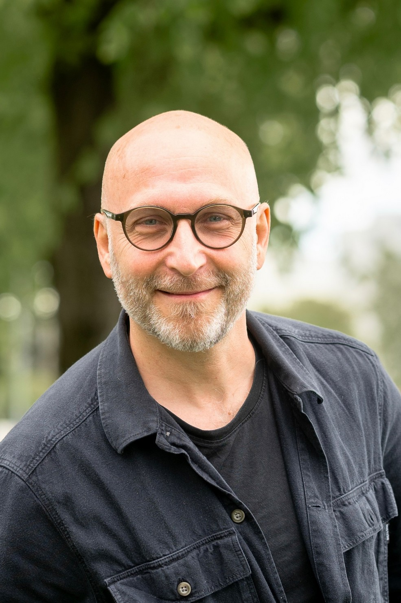
Tero Koskinen työskentelee valmiuspäällikkönä pelastuslaitoksella ja hyvinvointialueella. Koskisen erityisosaamista ovat yritysten, sosiaali- ja terveystoimen sekä pelastuslaitosten valmius ja varautuminen. Keskeisiä teemoja Koskisella ovat turvallisuus, luonto ja ympäristö sekä liikkuva elämäntapa.
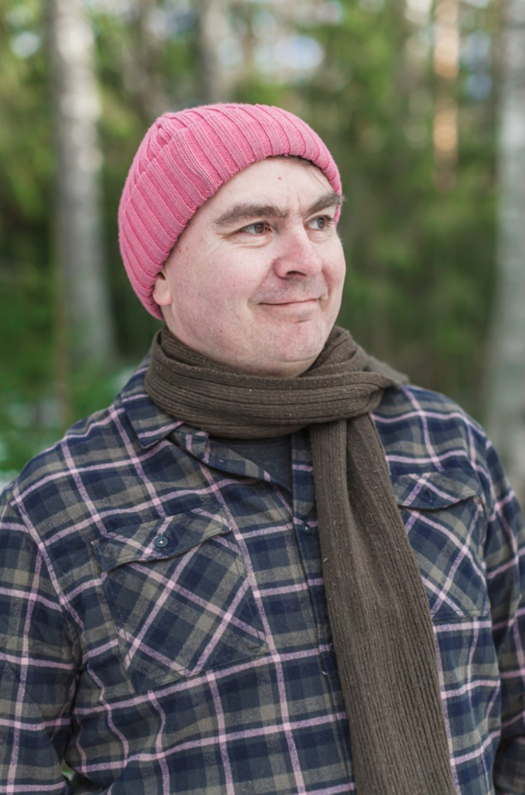
Jaakko Kyrö on mäntsäläläinen perheenisä, ohjelmistokehittäjä ja pelimanni. Arki kuluu palkkatyön lisäksi kunnallispolitiikassa Mäntsälän kunnanvaltuuston varajäsenenä sekä teknisen lautakunnan jäsenenä sekä kulttuurin saralla suomalaisen kansanmusiikin edistämisen parissa. Vihreät on valikoitunut Jaakon puolueeksi ensisijaisesti markkinamyönteisyyden, eturyhmäpolitikoinnin puutteen sekä tietoon perustuvan politiikan takia.
Tuuli Kousa on helsinkiläinen kaupunginvaltuutettu, kaupunginhallituksen jäsen, juristi ja yrittäjä. Tuulilla on pitkä kokemus yrityselämän johtotehtävistä viestinnän, vastuullisuuden ja yhteiskuntasuhteiden parissa. Politiikassa hän on toiminut aiemmin Helsingin kaupunginvaltuuston puheenjohtajana, kehitys- ja omistajaohjausministeri Pekka Haaviston erityisavustajana ja Vihreiden talouspoliittisen työryhmän puheenjohtajana.
Tuulin politiikan peruskiviä ovat vastuullinen markkinatalous, yhdenvertaisuus, koulutus, kulttuuri ja luonnon monimuotoisuus. Niiden varaan voidaan rakentaa sivistynyt, vauras ja sosiaalisesti oikeudenmukainen yhteiskunta, jossa jokaisella on näköaloja ja joka kannustaa tekemään, uskaltamaan ja yrittämään.
Arttu Laitinen on kahden lapsen isä, teknologian ja myynnin ammattilainen (DI, UTU) sekä aktiivinen reservin upseeri. Arttu ajaa markkinaehtoista, energiaomavaraista ja koulutukseen panostavaa Suomea, jossa panokset laitetaan eläkeläisten sijaan lapsiin, nuoriin ja tulevaisuuteen. Arttu toimii Turun kaupunginvaltuuston varavaltuutettuna, Turun Vihreiden valtuustoryhmän varapuheenjohtajana ja Turun lasten ja nuorten palveluiden lautakunnan jäsenenä.
Lauri Lavanti on Kirkkonummen kunnanvaltuutettu, valtuustoryhmän puheenjohtaja ja johtava ohjelmistokehittäjä pankissa. Hän on valmistunut diplomi-insinööriksi Aalto-yliopistosta ja hänellä on neljä lasta. Laurin isä toimi pitkään Kokoomuksen kunnanvaltuutettuna Kirkkonummella. Laurin tavoitteena on digitaalisesti itsenäinen Suomi, jossa talous, sivistys ja vapaus toimivat yhdessä tekoälyn aikakaudella.
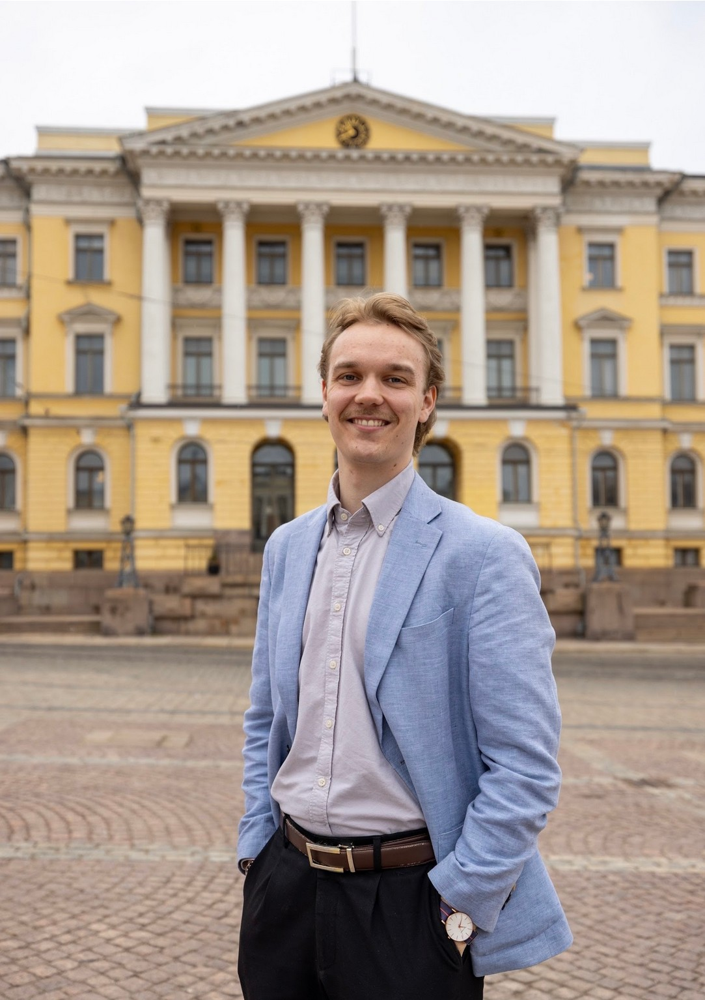
Onni-Jonatan Matilainen on varakaupunginvaltuutettu Oulusta, puoluevaltuuston varajäsen ja taloustieteen maisteriopiskelija. Politiikassa hänen keskeisiin teemoihin kuuluu muiden muassa kestävä kehitys, ilmastopolitiikka, elinkeinopolitiikka ja uudistava sosiaalipolitiikka.
Kalle Matsinen on tamperelainen ravintoloitsija ja humanisti. Matsiselle tärkeitä teemoja ovat reilu ja toimiva markkinatalous, kestävä liikenne- ja kaupunkisuunnittelu, vähemmistöjen osallisuus politiikassa ja oikeuksien toteutuminen.
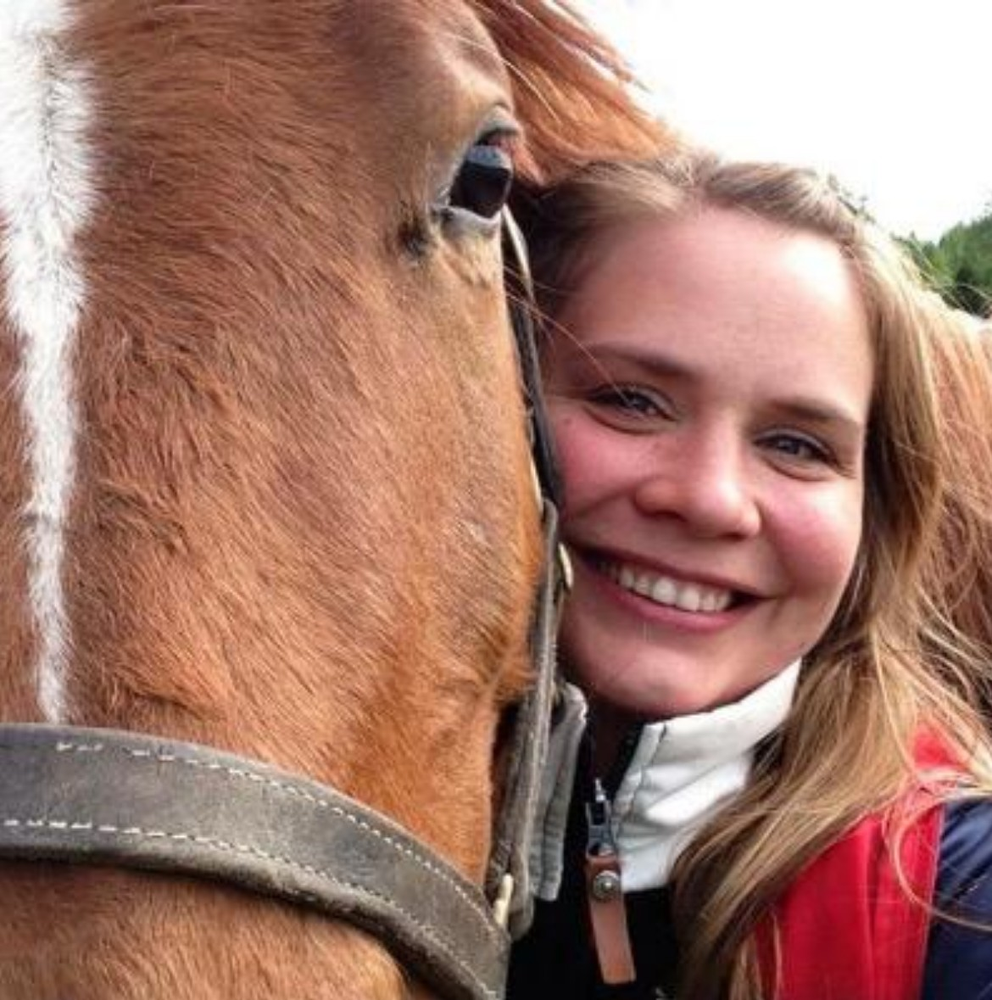
Johanna Muurinen on sipoolainen tutkija, dosentti, agronomi ja aloitteleva kuntapoliitikko, jonka politiikkaan lähtemisen motiivina oli varmistaa tutkimustietoon pohjautuvia päätöksiä. Sipoon kunnanvaltuustossa hän on 1. varavaltuutettu, rakennus- ja ympäristövaliokunnan jäsen, kunnanhallituksen varajäsen ja Sipoon Vesi -liikelaitoksen johtokunnassa kunnanhallituksen edustajana. Johanna on kotoisin Porvoosta ja asunut myös Yhdysvalloissa, missä hän näki läheltä mihin arvokonservatiivinen ja tiedettä väheksyvä politiikka johtaa. Työkseen Johanna tutkii ihmiskunnan kohtalonkysymyksiä ja hänen poliittisena tavoitteenaan on ohjata päätöksiä siihen suuntaan, että maailma olisi tuleville sukupolville parempi paikka.
Lauri Nevanperä on johtava tekoälyinsinööri, Tampereen kaupunginvaltuutettu, yhdyskuntalautakunnan jäsen ja Pirkanmaan maakuntavaltuutettu. Hänen ydinalojansa ovat talous, teknologia, liikenne ja kaupunkisuunnittelu. Laurin mielestä markkinamekanismi on tehokkain tunnettu tapa allokoida resursseja, mutta markkinatalous ei ole moraalinen voima. Tästä syystä tarvitaan vapaat markkinat, ja vahva sosiaaliturva. Vahva talous, lämmin sydän.
Olli-Pekka Paasivirta on kauppatieteiden maisteri ja varakaupunginvaltuutettu Espoosta. Hän on työskennellyt ekonomistina niin elinkeinoelämässä kuin julkisella sektorilla. Hän ajattelee, että markkinatalous on paras työkalu aikamme suurten ongelmien ratkaisemiseksi, ja Vihreät ymmärtää tämän Suomen puoluekentästä kaikista parhaiten.
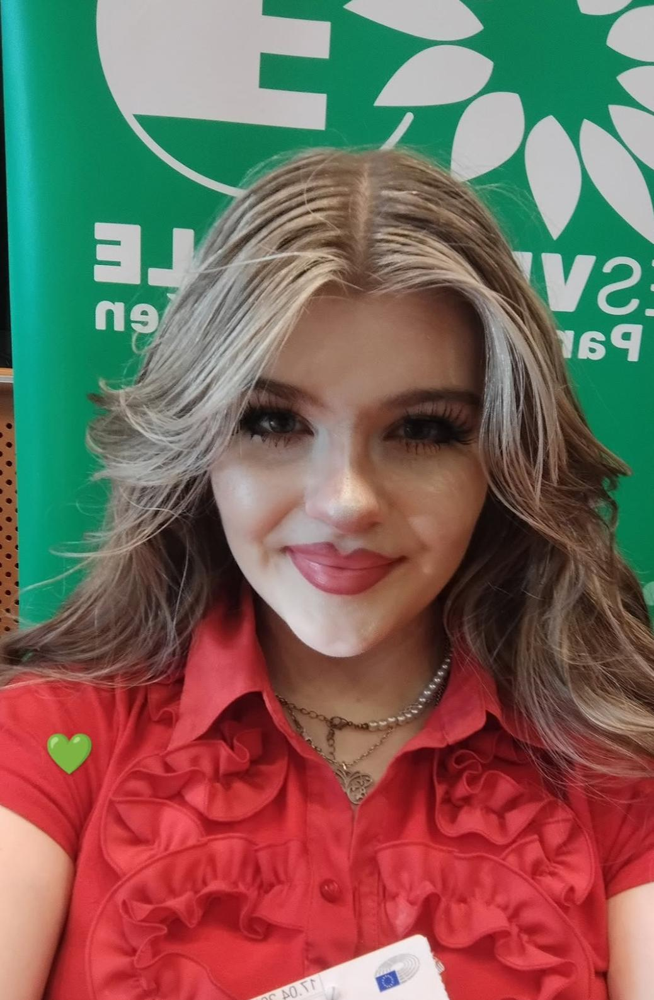
Vilju on abivuodelle tallusteleva lukiolainen sekä avoimen yliopiston oikeustieteiden opiskelija. Hän toimii Vihreiden Nuorten ja Opiskelijoiden liittohallituksessa talouspolitiikan vastaavana sekä Vihreiden ulko- ja turvallisuuspoliittisessa asiantuntijatyöryhmässä. Viljun talousfilosofian ytimenä toimii kestävä talous, kunnossa oleva kokonaisturvallisuus ja panostettu koulutus sen pohjana. Perustulo, tasa-arvo, hyöty- ja haittaverotus ovat avaimet vapautuneeseen elämään.
Ilari Putkonen on ekonomi, johtava IT-asiantuntija ja kuntapoliitikko Tampereelta. Politiikassa Putkonen on kiinnostunut erityisesti reilun markkinatalouden edistämisestä, talouskasvun edellytysten luomisesta ja sukupolvien välisen oikeudenmukaisuuden vaalimisesta. Suvaitsevaisuus, jakamaton ihmisarvo ja luonnon kantokyvystä huolehtiminen muodostavat arvopohjan Putkosen poliittiselle toiminnalle.
Juho on johtamisen tutkija, neuvonantaja ja puhuja, joka tekee satiiria ja standupia työelämän toinen toistaan absurdimmista ilmiöistä. Hänen mielestään suomalaista johtamista ja politiikkaa vaivaavat samat ilmiöt: visioton uudistumiskyvyttömyys, lyhytnäköinen kotiinpäin vetäminen sekä puheiden ja tekojen ristiriita. Markkinavihreys purkaa uudistumista jarruttavat yritystuet, lopettaa ympäristöä tuhoavan vapaamatkustamisen ja laittaa ulkoisvaikutuksille hinnan, joka sitoo teot puheisiin. Näin syntyvät kestävät markkinat vihreälle kasvulle ja uusille aluille.
Susanna Sankala on jatkuvan oppimisen asiantuntija LUTin teknillisen yliopiston tohtorikoulusta (VTM), koulutusalan yrittäjä ja puhuja Turusta. Susannan pääteemoja vaaleissa ovat koulutus, turvallisuus ja tulevaisuus. Hän on mukana erityisesti tekoälyn, teknologian ja yrittäjyyden verkostoissa. Hän on Vihreiden koulutuspoliittisen asiantuntijatyöryhmän puheenjohtaja sekä Turun Seudun Vihreiden naisten puheenjohtaja.
Susanna Sielo on Espoon kaupunginvaltuutettu, markkinavihreä talousmimmi, strategiaan erikoistunut ekonomi sekä rationaalinen ääni politiikassa. Työkseen hän konsultoi yrityksiä teknologian ja tekoälyn kysymyksissä. Espoossa Susanna toimii mm. Yritysten ja yrittäjyyden ohjausryhmässä ja edistää kasvuyritysten edellytyksiä ja yrittäjyyskasvatusta kaikille nuorille. Koulutustason nostaminen, tasa-arvon edistäminen ja nuorten syrjäytymisen estäminen ovat Susannalle tärkeitä teemoja, ja näitä tavoitteita hän on myös saanut läpi valtuustossa. Entisenä Kokoomuksen äänestäjänä Susanna vaihtoi Vihreisiin, kun Kokoomus ei enää vastannut hänen käsitystään tietoon pohjautuvasta, uudistavasta ja resurssiviisaasta politiikasta. Susanna haluaa mieluummin rakentaa politiikkaa, joka yhdistää uudistuvan talouden, luonnon elpymisen ja vapaan sivistysyhteiskunnan. Susannan sydän ei ole oikealla vaan se on lämmin, empaattinen ja vihreä.
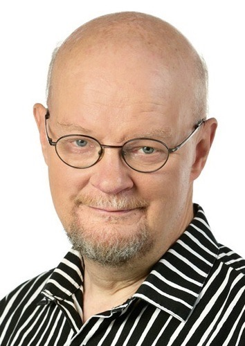
Osmo Soininvaara on tietokirjailija ja politiikan eläkeläinen.
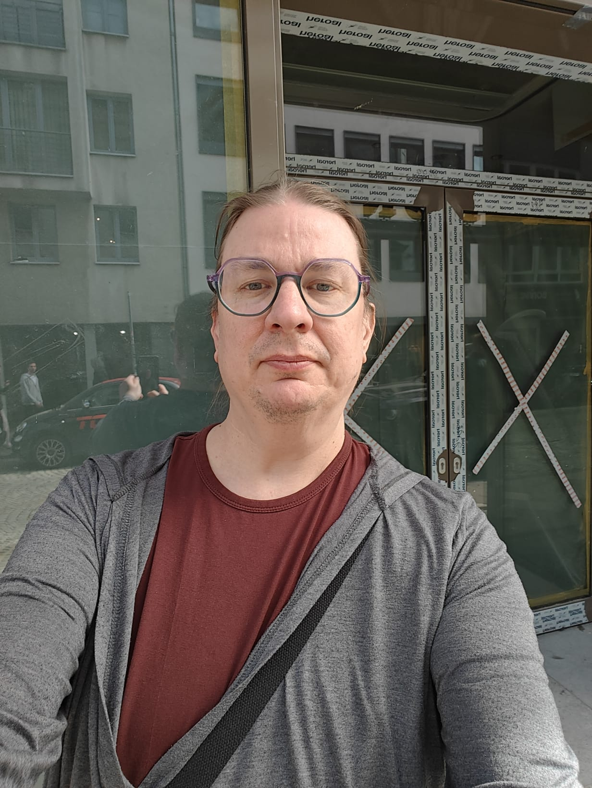
Mikko Särelä on tietoverkkotekniikan tohtori Aalto-yliopistosta, Lisää kaupunkia -liikkeen perustaja ja aiemmassa elämässä Helsingin kuntapolitiikassa aktiivinen. Mikko toimi myös Vihreiden kaupunkipoliittisen työryhmän puheenjohtajana kaudella 2022-2023. Mikko on työskennellyt uransa varrella startupissa, yliopistossa, kansainvälisessä suuryrityksessä ja järjestökentällä. Markkinat ovat erinomainen väline tuottaa hyvinvointia, jakaa niukkoja resursseja ja vähentää luontohaittoja. Ilmastopäästöjen päästökauppa on paras keksitty menetelmä vähentää päästöjä.
Samuel Tammekann on Eurooppalainen Suomi ry:n vt. toiminnanjohtaja, erityisasiantuntija ja yhteiskuntahistorian opiskelija. Kokoomusnuorten 2. varapuheenjohtajanakin toiminut ja vihreisiin siirryttyään monissa kampanjoissa tiiviisti mukana ollut Tammekann haluaa olla laatimassa tämän vuosisadan paineet kestävää avointa yhteiskuntaa ja ekososiaalista markkinataloutta, jossa yksilönvapaus, oikeudenmukaisuus ja ekologinen kantokyky kulkevat käsi kädessä. Erityisesti Tammekannia kiinnostaa moniarvoisen demokratian kestävyys teknologisen murroksen ja monikriisien aikakaudella.
Eeva Ylikoski on luokanopettaja opiskelija Itä-Suomen Yliopistosta. Hän toimii ylioppilaskunnan hallituksessa sosiaalipolitiikan sektorilla ja Savo-Karjalan vihreiden nuorten ja opiskelijoiden hallituksen vara-puheenjohtajana. Tämän lisäksi Eeva toimii Joensuun vammaisneuvostossa. Eevalle on tärkeää politiikka, jossa erityisesti vähempi osasia autetaan ja tuetaan. Luontojärjestöt ovat myös Eevalle tärkeitä ja onkin siellä aloittanut oman poliittisen uransa. Eeva on mukana vihreissä, koska hänelle luonto ja eläimet ovat erityisen lähellä sydäntä. Hänestä myös vahva valtio auttaa heikompia pärjäämään ja pysymään mukana yhteiskunnassa.